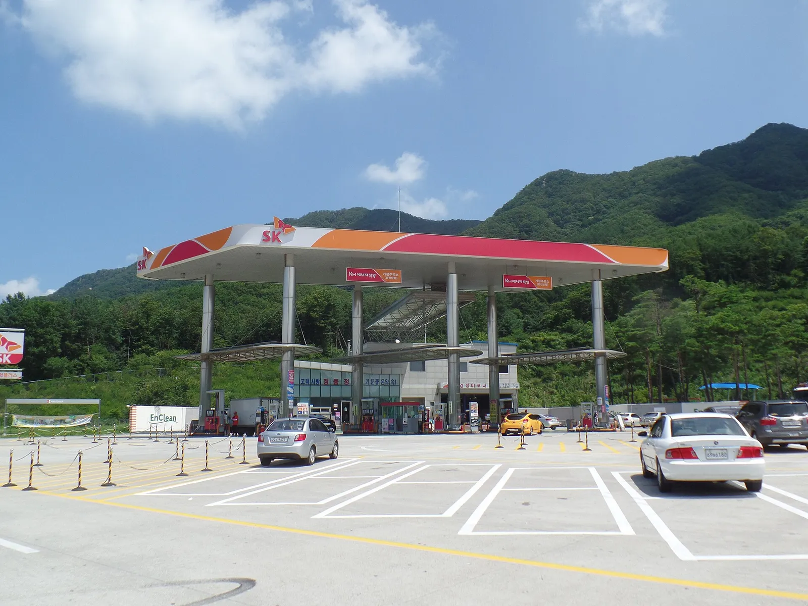
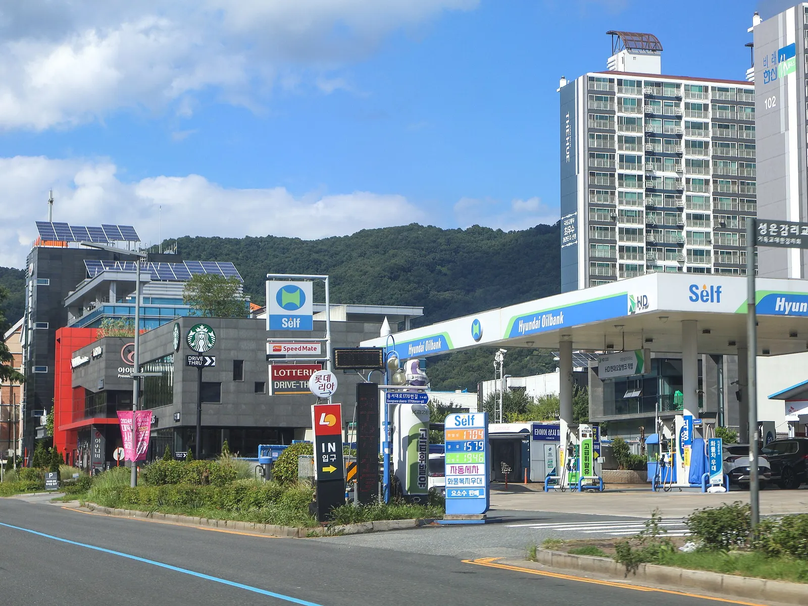
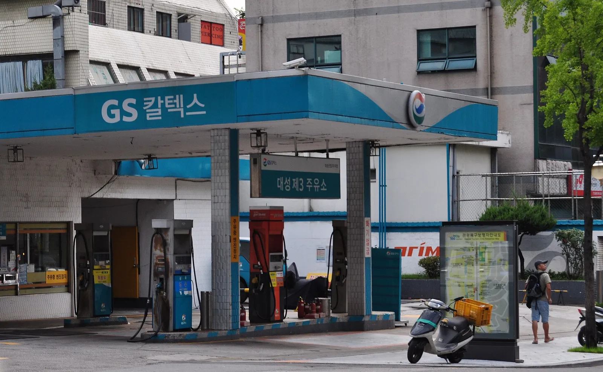
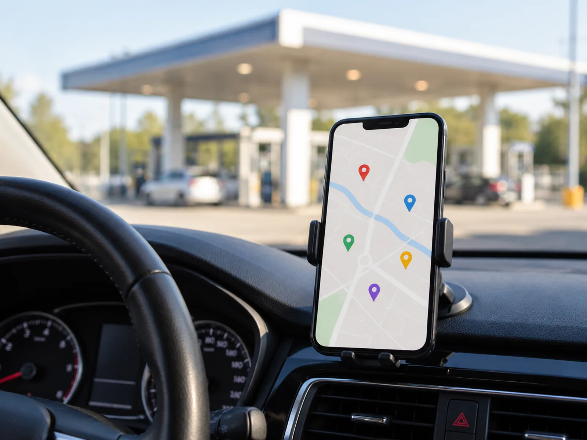
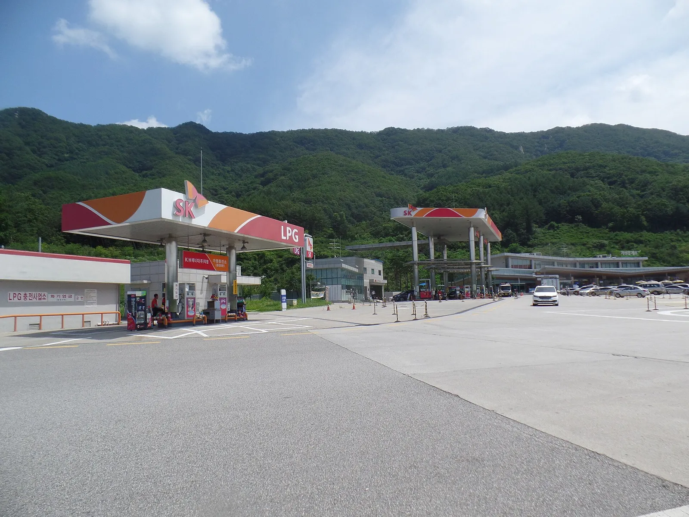
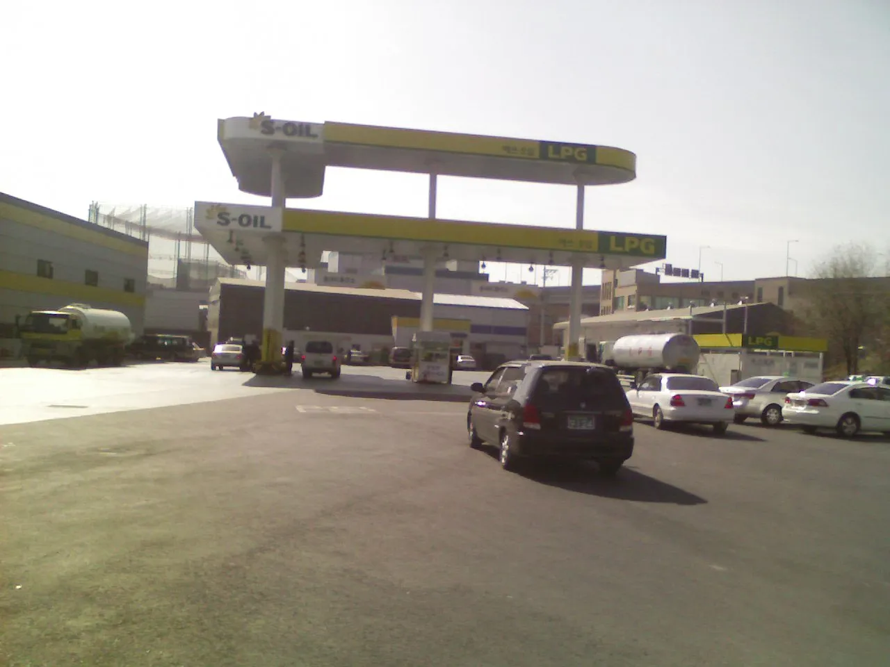

▲ 셀프 표지를 내건 정유사 브랜드 주유소 ⓒ LandAndTree / Wikimedia Commons (CC0)
"알뜰주유소가 싸다고 하는데, 정확히 얼마나?" 보도마다 숫자가 다르다. 87원이라는 기사도 있고, 같은 시기 오피넷 주간 평균으로는 16원 정도라는 계산도 나온다. 이 글은 주유비를 줄이는 방법을 효과 크기 순서대로 줄 세우고, 공개된 숫자만으로 내 연 주행거리에 대입해 본다. 확인하지 못한 할인율은 추정이라고 표시했다.
유류세 인하 연장 자체는 유류세 인하 연장 기사에서 다뤘고, 이 글은 "주유소를 어떻게 고를 것인가"에 집중한다. 휘발유 가격은 오피넷 9월 4주 전국 평균 1,858원을 반올림한 1,850원/L 가정이다(전기차 충전 비교 기사와 같은 기준).
1. 알뜰주유소는 세 종류다 — 같은 알뜰이라도 격차가 다르다
알뜰주유소는 운영 주체에 따라 NH알뜰(농협), 자영알뜰(석유공사가 공동구매 등으로 지원하는 개인 사업자), EX알뜰(한국도로공사 고속도로 주유소)으로 나뉜다. 최수진 국민의힘 의원실이 한국석유공사에서 제출받은 자료를 인용한 2026년 10월 1일 보도(기준일 미명시)에서 세 유형의 평균은 1,552.16원으로 정유사 4사 평균 1,639.54원보다 약 87원 낮았다. 다만 유형별로 보면 격차는 균일하지 않다.
| 상표 | 평균 판매가격 | SK에너지 대비 | 비고 |
|---|---|---|---|
| SK에너지 | 1,650.87원 | 기준 | — |
| GS칼텍스 | 1,644.32원 | 6.55원 저렴 | 정유사 4사 평균 1,639.54원 |
| 에쓰오일 | 1,631.91원 | 18.96원 저렴 | — |
| HD현대오일뱅크 | 1,631.07원 | 19.80원 저렴 | — |
| NH알뜰 (농협) | 1,578.25원 | 72.62원 저렴 | 정유사 평균 대비 61.29원 |
| 자영알뜰 (석유공사 지원) | 1,569.63원 | 81.24원 저렴 | 정유사 평균 대비 69.91원 |
| EX알뜰 (고속도로) | 1,508.59원 | 142.28원 저렴 | 정유사 평균 대비 130.95원 |

▲ 고속도로 휴게소 주유소는 일반 주유소와 가격 구조가 다를 수 있다. 사진은 가평휴게소(파일 정보 기준) 주유소로, 간판 브랜드와 가격은 현재와 다를 수 있다 ⓒ Jhcbs1019 / Wikimedia Commons (CC BY-SA 4.0)
📍 이 숫자를 읽는 법
위 표의 절대 가격(1,500~1,650원대)은 같은 시기 오피넷 전국 평균(약 1,858원)과 수준이 달라, 산정 기준 시점과 방식을 확인하지 못했다. 약 200원 차이가 나는 것은 측정 기준·시점이 달라서일 수 있어(추정) 직접 비교할 수 없다. 그래서 이 글은 절대 가격이 아니라 상표 간 격차만 계산에 쓴다. EX알뜰은 고속도로 위에 있어 일부러 들러야 하는 곳이라는 점도 함께 고려해야 한다.
2. 오피넷으로 직접 대조해 본 현재 격차
한국석유공사 오피넷은 전국 주유소 판매가격과 지역별·상표별 평균을 공개한다. 이 글을 쓰며 확인한 값은 아래와 같다. 9월 4주(9/20~24) 오피넷 상표별 평균(휘발유)은 GS칼텍스 1,861.5원, 알뜰 1,845.9원으로 격차가 약 15.6원이었고, 같은 시기 전국 평균은 1,858원이었다.
| 출처·시점 | 정유사 대비 알뜰 격차 | 카프리즘 해석 |
|---|---|---|
| 의원실 제출 자료 보도(10/1, 기준일 미명시) | 약 87원 (알뜰 3사 평균 기준) | 기준 시점·산정 방식 확인 못 함. 상한선 참고용 |
| 오피넷 9월 4주 상표별 | 약 16원 (GS칼텍스 대비 알뜰) | 실제 가격표 기준의 보수적 값 |
| 상표별 최대 격차 | 142.28원 (SK에너지 vs EX알뜰) | EX알뜰 위치에 가야 누릴 수 있는 최대치 |
그래서 계산표에서는 16원(보수), 50원(중간 가정), 87원(보도 상한) 세 시나리오를 모두 보여 준다. 오피넷에서 내 동선 안의 실제 가격을 확인하면 어느 시나리오인지 바로 알 수 있다.
지역별·상표별 가격과 최저가 주유소는 오피넷에서 직접 확인할 수 있다. 오피넷 바로가기
3. 셀프주유소는 정말 싼가 — 확인된 것과 못 한 것
셀프주유소는 직원 인건비를 줄여 가격표를 낮추는 구조로 알려져 있다. 다만 셀프와 풀서비스의 리터당 격차를 보여 주는 공식 통계는 이번 조사에서 확인하지 못했다. 같은 브랜드라도 지점마다 가격이 다르기 때문에, 오피넷에서 근처 셀프 지점과 일반 지점의 가격을 직접 대조하는 것이 가장 정확하다.

▲ 도심 대로변 셀프 주유소. 셀프 표지와 가격 간판이 입구에 함께 서 있다 ⓒ LandAndTree / Wikimedia Commons (CC0)
✅ 셀프 주유소 이용 시 체크 포인트
· 간판 가격이 현금가인지 카드가인지 확인(표기 방식은 지점마다 다를 수 있음)
· 셀프는 직접 노즐을 잡으므로 경유·휘발유 노즐 혼동에 주의
· 경차 유류세 환급이나 카드 할인이 셀프 여부와 별개로 적용되는지는 약관으로 확인
· 풀서비스에서 세차·엔진오일 상담을 함께 받는다면 단가만으로 비교하기 어렵다
▲ 셀프 주유 장면(설명용 AI 생성 예시 이미지). 셀프는 노즐을 직접 잡는 만큼 유종 확인이 먼저다 ⓒ CarPrism (AI 생성 이미지)
4. 주유 카드·멤버십 할인 — 월 한도가 먼저 걸린다
주유 할인 카드는 리터당 할인액이 눈에 띄지만 전월 실적 조건과 월 한도가 함께 붙는다. 아래는 2025년 12월 18일 자 비교 기사에 실린 조건을 그대로 옮기고, 월 주유량(50·100·150L)별 환산액을 카프리즘이 계산한 것이다. 카드 혜택은 수시로 개편되므로 신청 전 카드사 공식 안내로 반드시 재확인해야 한다.
⚠️ 카드 조건은 2025.12 기준입니다
아래 표의 taptap DRIVE·디지로카 Auto·Deep Oil·RPM+ 조건은 2025년 12월 비교 기사 기준이며, 카드사 공식 페이지에서 최신 조건을 확인하지 못했다. 개편 가능성이 크므로 삼성카드·롯데카드·신한카드 공식 안내 확인이 필수다.
| 카드 | 공개된 조건 (2025.12 비교 기사 기준) | 월 50L | 월 100L | 월 150L |
|---|---|---|---|---|
| 삼성 taptap DRIVE | 리터당 60~150원 할인, 월 한도 1만 5천 원, 전월 30만 원 | 3,000~7,500원 | 6,000~15,000원 | 9,000~15,000원 |
| 롯데 디지로카 Auto | 리터당 최대 150원, 월 한도 5만 원, 전월 50만 원 | 최대 7,500원 | 최대 15,000원 | 최대 22,500원 |
| 신한 Deep Oil | 주유 10%(1개 정유 브랜드), 월 한도 1.5만~3만 원, 전월 30만 원 | 9,250원 | 15,000~18,500원 | 15,000~27,750원 |
| 신한 RPM+ Platinum# | 리터당 40~150포인트 적립(할인 아님), 월 30만 원까지, 전월실적 없음 | 2,000~7,500P | 4,000~15,000P | 6,000~22,500P |
📍 계산 가정과 한계
· 할인 대상 정유사·제휴 조건, 연회비, 통합 한도(다른 항목과 공유 여부)는 표에 반영하지 못했다
· 삼성 iD STATION(HD현대오일뱅크) 카드(연회비 1.5만 원)는 3월 19일 최초 출시 보도(머니투데이·전자신문)에서 주유 최대 10% 할인, 월 최대 3.5만 원, 일반 휘발유 리터당 3포인트(조건부 최대 9포인트 보도)로 소개됐다(5월 경향신문은 후속 특집). 위 표의 taptap DRIVE와는 다른 상품이다. 전월실적별 한도 구조는 확인하지 못했다
· 카드 할인이 알뜰주유소에도 적용되는지는 카드마다 다르며, 확인하지 못했다. 알뜰 할인과 카드 할인을 합산할 수 있다고 단정하지 않는다
월 100L(연 1,200L)를 넣는 운전자에게 알뜰 격차를 월 환산하면 16원이면 1,600원, 50원이면 5,000원, 87원이면 8,700원이다. 같은 100L에서 카드는 조건이 맞으면 6,000~15,000원까지 가능해, 실적을 이미 채우는 카드가 있다면 카드 할인이 알뜰 격차보다 클 수 있다. 반대로 실적을 맞추려고 쓰지 않던 소비를 늘린다면 이득이 사라진다.
▲ 주유 카드 결제 장면(설명용 AI 생성 예시 이미지). 할인은 전월 실적과 월 한도 조건을 먼저 확인해야 한다 ⓒ CarPrism (AI 생성 이미지)

▲ 정유사 계열 주유소. 정유사 포인트·제휴 카드는 해당 브랜드 주유소에서만 혜택이 붙는 경우가 많다. 촬영 시기가 오래돼 현재 간판과 다를 수 있다 ⓒ HappyMidnight / Wikimedia Commons (CC BY-SA 3.0)
5. 주유 타이밍 속설 — 사실과 확인 못 한 것
"월요일 아침이 싸다", "주말 직전에 올린다" 같은 말은 흔하다. 이번 조사에서 요일·시간대별로 주유소 판매가가 어떻게 움직이는지를 보여 주는 공식 통계는 확인하지 못했다. 일부 사이트가 월~수가 상대적으로 싸다고 소개하지만 근거 데이터를 확인하지 못해 사실로 옮기지 않았다.
| 주장 | 판정 | 근거·메모 |
|---|---|---|
| 상표·주유소를 고르면 단가가 달라진다 | 사실 | 같은 시기 상표 간 최대 142.28원 격차(석유공사 자료 보도) |
| 월~수요일이 목~일요일보다 싸다 | 확인 못 함 | 공식 요일별 통계 미확인, 일부 사이트 설명뿐 |
| 새벽·저녁 시간대에 넣으면 싸다 | 확인 못 함 | 주유소 판매가는 지점이 정하며, 시간대별 통계 미확인 |
| 연휴에 고속도로 주유소가 깎아 준다 | 사실(한시적) | 추석 연휴 9/24~27 한국도로공사 관리 재정고속도로 주유소 226곳 리터당 100원 인하(17일 판매가 대비, 민자 고속도로 제외, 보도 기준). 매번 반복된다고는 단정 못 함 |
| 유류세 인하 종료 전에 미리 넣어야 한다 | 일부 사실, 효과 제한 | 인하 종료 시 휘발유 리터당 약 122원 상승 요인이지만 한 번에 넣을 수 있는 양은 탱크 용량(예: 50L)까지 |
✅ 타이밍보다 먼저 볼 것
· 요일을 맞추려 하기보다 출퇴근 동선 안에서 가장 싼 주유소를 고정하는 편이 확실하다
· 연휴 한시 인하는 대상 주유소·기간이 짧아 도로공사 공지와 보도를 확인하고 들를 것
· 유류세 인하 종료 시점은 유류세 인하 연장 기사의 시나리오를 참고
6. 가격 비교 앱 — 공식 데이터는 오피넷
가격 비교의 기준 데이터는 한국석유공사 오피넷이다. 오피넷은 지역·상표·셀프 여부 등으로 주유소 가격을 비교할 수 있게 공개한다. 내비게이션 앱 등에서도 주변 주유소 가격이 표시되는 경우가 있지만, 앱별 기능과 데이터 갱신 주기는 수시로 바뀌므로 이번 조사에서 개별 앱 기능을 확인하지는 못했다.

▲ 주변 주유소를 지도에서 비교하는 장면(설명용 AI 생성 예시 이미지). 가격 기준은 오피넷 공개 데이터로 대조한다 ⓒ CarPrism (AI 생성 이미지)
📍 비교할 때는 이 3가지만
· 동선: 돌아가는 시간과 연료가 절감액보다 크지 않은지
· 유종·셀프 여부: 같은 조건끼리 비교
· 갱신 시점: 가격 갱신이 늦은 지점은 현장 간판과 다를 수 있다
예를 들어 연비 12km/L 차량이 왕복 12km를 돌아 가면 연료 약 1L(약 1,850원)가 든다. 리터당 50원 절감으로 40L를 넣어 2,000원 아낀다 해도 실익은 약 150원이다. 출퇴근 동선 안이나 도착지 근처에서 싼 곳을 고정하는 것이 가장 이득이다.
7. 연 주행거리별 연간 절감액 계산표
계산식은 연 주유량(L) = 연 주행거리 ÷ 연비, 연 절감액 = 연 주유량 × 리터당 절감액이다. 휘발유 1,850원/L로 고정했다. 실제로는 내 차 연비와 가격표를 넣어 같은 식으로 다시 계산해야 한다.
| 연 주행거리 | 연 주유량 | 연 주유비 (1,850원/L) | 리터당 16원 절감 | 리터당 50원 절감 | 리터당 87원 절감 | 참고: 유류세 인하 122원 종료 시 증가 |
|---|---|---|---|---|---|---|
| 5,000km | 417L | 770,833원 (약 77.1만 원) | 6,667원 | 20,833원 | 36,250원 | 50,833원 |
| 10,000km | 833L | 1,541,667원 (약 154.2만 원) | 13,333원 | 41,667원 | 72,500원 | 101,667원 |
| 15,000km | 1,250L | 2,312,500원 (약 231.3만 원) | 20,000원 | 62,500원 | 108,750원 | 152,500원 |
| 20,000km | 1,667L | 3,083,333원 (약 308.3만 원) | 26,667원 | 83,333원 | 145,000원 | 203,333원 |
| 연 주행거리 | 연 주유량 | 연 주유비 (1,850원/L) | 리터당 16원 절감 | 리터당 50원 절감 | 리터당 87원 절감 | 참고: 유류세 인하 122원 종료 시 증가 |
|---|---|---|---|---|---|---|
| 5,000km | 333L | 616,667원 (약 61.7만 원) | 5,333원 | 16,667원 | 29,000원 | 40,667원 |
| 10,000km | 667L | 1,233,333원 (약 123.3만 원) | 10,667원 | 33,333원 | 58,000원 | 81,333원 |
| 15,000km | 1,000L | 1,850,000원 (약 185.0만 원) | 16,000원 | 50,000원 | 87,000원 | 122,000원 |
| 20,000km | 1,333L | 2,466,667원 (약 246.7만 원) | 21,333원 | 66,667원 | 116,000원 | 162,667원 |
📍 표 읽는 법
예를 들어 연 1만km, 연비 12km/L면 연 833L를 넣고 연 주유비는 약 154만 원이다. 알뜰·셀프로 리터당 50원을 줄이면 약 4.2만 원, 87원이면 약 7.3만 원을 아낀다. 같은 조건에서 유류세 인하 122원이 사라지면 연 약 10.2만 원 더 든다. 즉 주유소 선택만으로 인하 종료분의 상당 부분을 상쇄할 수 있지만(87원 기준 약 71%) 전부 메우지는 못한다.
▲ 주유비 계산 장면(설명용 AI 생성 예시 이미지). 내 연비와 주행거리를 같은 식에 넣어 다시 계산해 본다 ⓒ CarPrism (AI 생성 이미지)

▲ LPG 충전소가 함께 있는 고속도로 휴게소. LPG 가격도 오피넷에서 따로 비교된다 ⓒ Jhcbs1019 / Wikimedia Commons (CC BY-SA 4.0)
전기차 충전 기사의 1km당 비용 비교와 같은 기준이다. 휘발유 15km/L는 약 123원/km, 12km/L는 약 154원/km로, 주유소 선택으로 리터당 50원을 줄이면 15km/L 차는 약 3.3원/km, 12km/L 차는 약 4.2원/km 낮아진다. 자세한 비교는 전기차 충전요금 구조 기사에서 볼 수 있다.

▲ S-OIL 간판을 단 도로변 주유소. 촬영 시기가 오래돼 현재 시설과 다를 수 있다 ⓒ 슈트레인저 / Wikimedia Commons (CC BY 3.0)
✅ 주유비를 줄이는 우선순위
1. 동선 안 최저가 주유소 고정(오피넷으로 확인) — 보수적으로 16원, 보도 기준 87원(평균)~142원(EX알뜰 최대) 격차
2. 이미 쓰는 카드의 주유 할인 점검(월 한도·실적 확인)
3. 경차 유류세 환급 대상이면 신청(연 30만 원 한도는 유류세 기사 참고)
4. 연비 관리: 타이어 공기압은 가을 타이어 공기압 기사, 운전 습관은 연비 운전 속설 기사 참고
8. 요약
주유비를 줄이는 가장 확실한 방법은 주유소 선택이다. 최수진 의원실 제출 자료 보도(10월 1일, 기준일 미명시) 기준 SK에너지와 EX알뜰의 평균 격차는 리터당 142.28원, 알뜰 3사 평균은 정유사 평균보다 약 87원 낮았다. 다만 오피넷 9월 4주 기준 GS칼텍스 대비 알뜰 격차는 약 16원이라 시점에 따라 크게 달라진다.
연비 12km/L, 연 1만km를 타는 운전자는 리터당 16원 절감 약 1.3만 원, 50원 약 4.2만 원, 87원 약 7.3만 원을 아낀다(1,850원/L 가정). 주유 카드는 월 한도(1.5만~5만 원)와 전월 실적이 걸려 있어 이미 쓰는 카드라면 알뜰 격차보다 클 수 있다.
요일·시간대 속설은 공식 통계로 확인하지 못했고, 셀프와 풀서비스 격차도 공식 수치를 찾지 못했다. 오피넷에서 동선 안 가격을 직접 비교하는 것이 가장 정확하다.